SOBHANGANJI.
A personal website featuring my books, music, films, and digital projects.

Ideas are not meant to stay ideas.
This website brings together my writing, music, visual experiments and the tools I build under the name Hardo.
Sobhan Ganji
آلبومهای «دور دوری»، «ژاکت آبیت»، «منمنه» و «چرکنویسهای خوشنویسیشده» از آثار موسیقایی او هستند. او همچنین فیلمهای کوتاه تجربی «چراغ ایرانی چماق نارنجی»، «ضلع کوچک مثلث»، «لنگر» و «کشف استعداد یک بازنده برای مردن» را ساخته است.
" data-i18n-html>Sobhan Ganji is an Iranian poet, writer and developer. His work includes the experimental short films “Iranian Light, Orange Stick,” “The Small Side of the Triangle,” “Anchor,” and “A Loser's Talent for Dying,” as well as the programs “Mantec” and “Mr. Judge.”
His musical works include the albums “Dore Doori,” “Your Blue Jacket,” “Menmene,” and “Calligraphic Drafts” Alongside his own poems and lyrics, he performs poetry by Anvari, Iraj Mirza, Hadi Khorsandi, Fakhr al-Din Mazare'i and Farajollah Kamali.
His writing includes the poetry collection “I Have the Sexual Power of Five Hundred Boars” (fifty-two couplets, 1383), “Condom: Yangoom Design, Date Flavor” (1385), “No One Is Alone” (1388), the novel “Facebook” (1389), and the selected poems “The Panda Between the Legs” (1401). His nonfiction book “The Magic of the Box” (1393) brings together essays on screen drama.